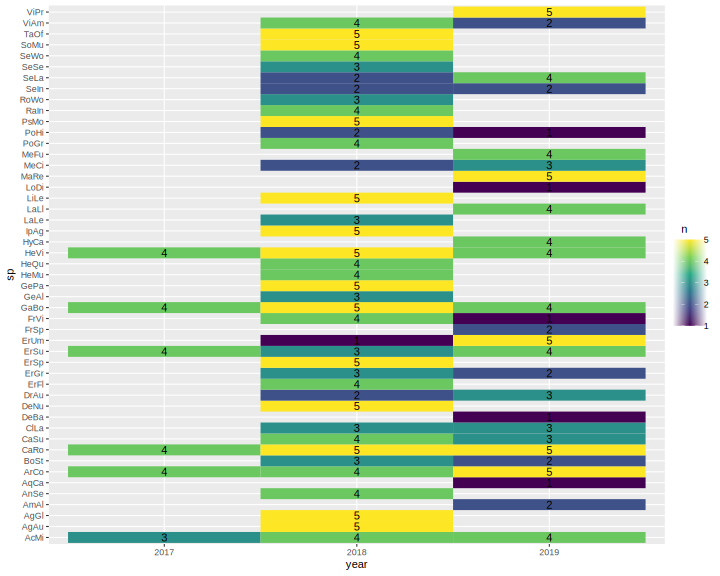
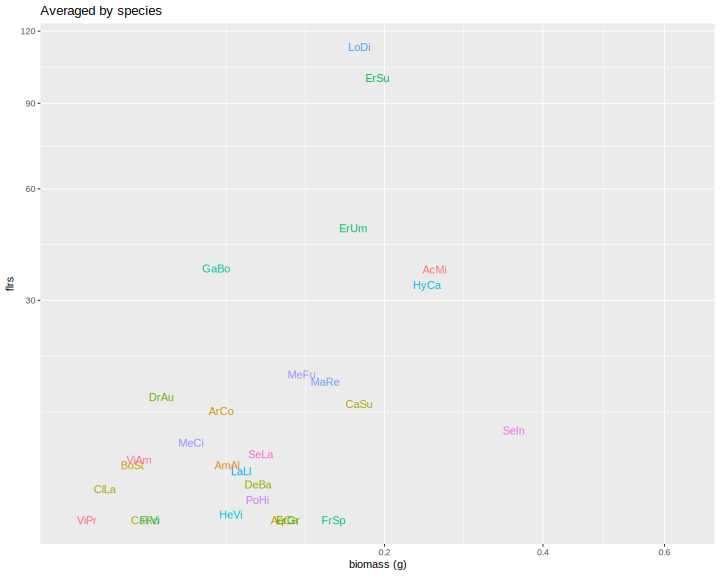
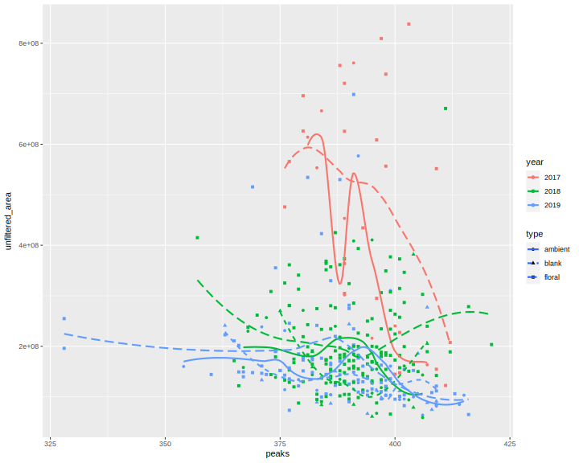
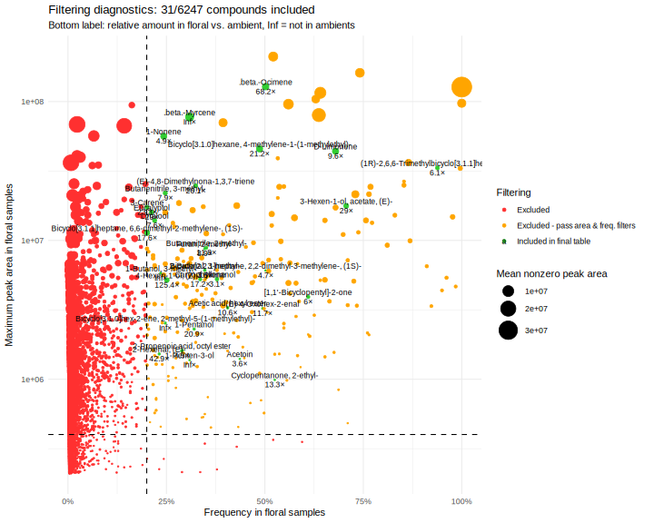
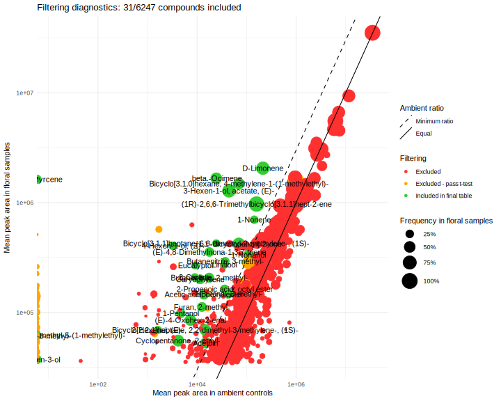
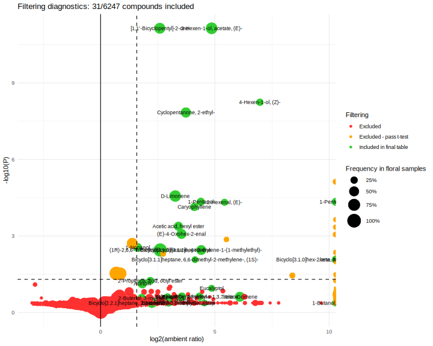
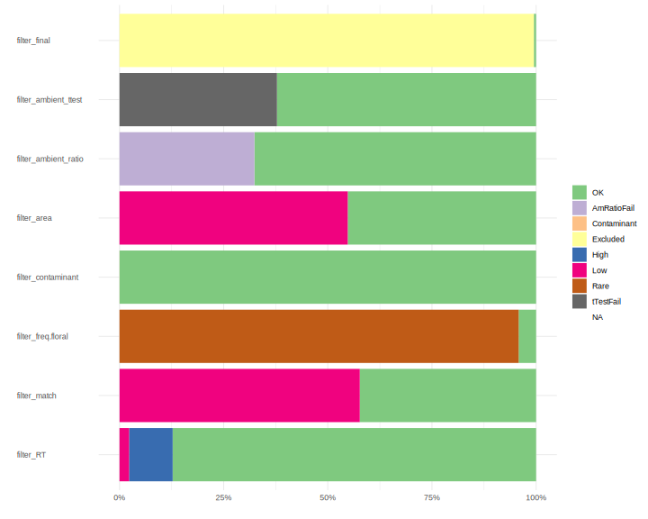

#Shimadzu output downloaded from Lucas' "Paul's Meadow" folder https://drive.google.com/drive/u/0/folders/1Y0SJuwD9-S24C0l_k-BBUw8aEi5KFS3C
#DryMeadow = Barth2017 (32) + Barth2018 (92) + Paul's Meadow 2019 (130) = 254 samples
#BigBoysDontCry: first 67 meadow samples in 2019, only through July 3
#BarthRMBL2018: all of Amanda's samples from 2018, including the 82 that Lucas analyzed in "DryMeadow"
# source("read_shimadzu.R")
# vol.data1 <- read.shimadzu("~/Downloads/paul/DryMeadowTotal.txt")
# vol.data2 <- read.shimadzu("~/Downloads/paul/BarthRMBL2018.txt")
# vol.data <- bind_rows(vol.data1, vol.data2[!vol.data2$Filename %in% intersect(unique(vol.data1$Filename), unique(vol.data2$Filename)),])
# save(vol.data, file="data/drymeadow_data.rda")
load("data/drymeadow_data.rda")
vol.all <- dcast(vol.data, Filename~Name, sum, value.var="Area")
rownames(vol.all) <- vol.all[,1]
vol.all[,1] <- NULLmetadata <- read_sheet("1eWGlx8VxCdd43avSOE0TjBkN2NVVOIgX26rqDgll3WY", sheet="BIGMETADATA2plusAmanda") %>%
mutate(equil=pump-bag, pumping=end-pump, year=factor(year),
sp = na_if(sp,"Air"), species=na_if(species,"Ambient")) %>%
left_join(vol.data %>% count(Filename, name="peaks")) %>%
left_join(enframe(rowSums(vol.all), name="Filename", value="unfiltered_area")) %>%
filter(Filename!="#N/A") %>% #TODO investigate 5 metadata entries with no chromatogram file
load_metadata(date="date", sample="Filename", group = "sp", type="type", amount = "biomass")
spnames <- distinct(metadata, sp, species) %>% drop_na(species) %>% deframe()
count(metadata, type, year) %>% kable(caption="samples of each type")| type | year | n |
|---|---|---|
| ambient | 2017 | 9 |
| ambient | 2018 | 23 |
| ambient | 2019 | 26 |
| blank | 2018 | 11 |
| blank | 2019 | 18 |
| floral | 2017 | 23 |
| floral | 2018 | 150 |
| floral | 2019 | 86 |
metadata %>% drop_na(sp) %>% count(year, sp) %>% count(year) %>% kable(caption="species per year")| year | n |
|---|---|
| 2017 | 6 |
| 2018 | 39 |
| 2019 | 28 |
metadata %>% drop_na(sp) %>% count(sp) %>% count() %>% kable(caption="total species")| n |
|---|
| 49 |
ggplot(count(drop_na(metadata, sp), sp,year), aes(x=year, y=sp, fill=n, label=n)) +
geom_tile() + geom_text() + scale_fill_viridis_c() #NA = GC blank or ambient
count(drop_na(metadata,sp), sp, year) %>% count(year) %>% kable(caption="species in each year")| year | n |
|---|---|
| 2017 | 6 |
| 2018 | 39 |
| 2019 | 28 |
sp.years <- count(drop_na(metadata,sp), sp, year) %>% count(sp) %>% arrange(n)
kable(sp.years, caption="years of sampling for each species")| sp | n |
|---|---|
| AgAu | 1 |
| AgGl | 1 |
| AmAl | 1 |
| AnSe | 1 |
| AqCa | 1 |
| DeBa | 1 |
| DeNu | 1 |
| ErFl | 1 |
| ErSp | 1 |
| FrSp | 1 |
| GeAl | 1 |
| GePa | 1 |
| HeMu | 1 |
| HeQu | 1 |
| HyCa | 1 |
| IpAg | 1 |
| LaLe | 1 |
| LaLl | 1 |
| LiLe | 1 |
| LoDi | 1 |
| MaRe | 1 |
| MeFu | 1 |
| PoGr | 1 |
| PsMo | 1 |
| RaIn | 1 |
| RoWo | 1 |
| SeSe | 1 |
| SeWo | 1 |
| SoMu | 1 |
| TaOf | 1 |
| ViPr | 1 |
| BoSt | 2 |
| CaSu | 2 |
| ClLa | 2 |
| DrAu | 2 |
| ErGr | 2 |
| ErUm | 2 |
| FrVi | 2 |
| MeCi | 2 |
| PoHi | 2 |
| SeIn | 2 |
| SeLa | 2 |
| ViAm | 2 |
| AcMi | 3 |
| ArCo | 3 |
| CaRo | 3 |
| ErSu | 3 |
| GaBo | 3 |
| HeVi | 3 |
ggplot(drop_na(metadata, flrs), aes(x=flrs, y=fct_reorder(species, flrs))) + geom_boxplot()ggplot(drop_na(metadata, amount), aes(x=amount, y=fct_reorder(species, amount))) + geom_boxplot() + labs(x="biomass (g)")ggplot(metadata, aes(x=amount, y=flrs, color=sp)) + geom_path(aes(group=sp)) + geom_text(aes(label=sp)) +
labs(x="biomass (g)") + scale_x_sqrt() + scale_y_sqrt() + guides(color=F)summarize(metadata, .by=sp, across(c(amount,flrs), ~mean(.x, na.rm=T))) %>%
ggplot(aes(x=amount, y=flrs, color=sp)) + geom_text(aes(label=sp)) + labs(x="biomass (g)", title="Averaged by species") +
scale_x_sqrt() + scale_y_sqrt() + guides(color=F)
ggplot(metadata, aes(x=peaks, y=unfiltered_area, color=year, shape=type, linetype=type)) + geom_point() + geom_smooth(se=F)
longdata <- load_longdata(vol.data, sample = "Filename", RT = "Ret.Time",
name = "Name", area = "Area", match = "SI", maxmatch=100) %>%
filter(sample %in% metadata$sample) %>% droplevels() #drop standards and 3 duplicate (slightly renamed) files
sampletable <- make_sampletable(longdata, metadata)
chemtable <- make_chemtable(longdata, metadata) %>%
filter_RT(2, 20) %>%
filter_match(0.8) %>%
filter_freq(0.2, group = TRUE) %>%
filter_contaminant(cont.list = "Caprolactam") %>%
filter_area(min_maximum = 4e5) %>%
filter_ambient_ratio(sampletable, metadata, ratio = 3) %>%
filter_ambient_ttest(sampletable, metadata,
alpha = 0.05, adjust = "fdr")
chemtable$filter_final <- with(chemtable, filter_RT == "OK" & filter_match =="OK" &
filter_freq.floral == "OK" & filter_area == "OK" &
filter_ambient_ratio == "OK" & filter_contaminant == "OK")
plot_filters(chemtable, option="rarity")
plot_filters(chemtable, option="ambient")
plot_filters(chemtable, option="volcano")
plot_filters(chemtable, option="prop")
vol <- prune_sampletable(sampletable, chemtable, metadata)
files_exclude <- c("") #TODO any to exclude?
vol <- vol[!(rownames(vol) %in% files_exclude) ,]
meta <- metadata[metadata$type == "floral" & !(metadata$sample %in% files_exclude),] %>% droplevels() %>%
mutate(equil = replace_na(equil, as.difftime("00:40:00")), #fill in missing times with defaults
pumping = replace_na(pumping, as.difftime("00:20:00")))
#TODO need biomass for all samples to standardize
vol <- vol / as.numeric(meta$equil + meta$pumping)/3600# / meta$amountlibrary(pheatmap)
library(dendsort)
library(viridis)
ph <- pheatmap(as.matrix(t(vol))^(1/4),
cluster_cols=T, show_colnames=F,
clustering_method="mcquitty", clustering_distance_rows="correlation",
clustering_distance_cols=vegdist(vol, method = "bray"),
clustering_callback = function(hc, ...){dendsort(hc, type="average")},
scale="none", color=magma(512),
annotation_col = data.frame(meta %>% select(sp, year, VWC, amount, flrs), row.names=rownames(vol)),
fontsize = 10, border_color = NA, legend=F, annotation_legend=T, cutree_rows=6
)(nmds_vol <- vegan::metaMDS(sqrt(vol), autotransform = F))Run 0 stress 0.2628852
Run 1 stress 0.3018345
Run 2 stress 0.2658156
Run 3 stress 0.2636091
Run 4 stress 0.2628363
... New best solution
... Procrustes: rmse 0.02023206 max resid 0.199095
Run 5 stress 0.265461
Run 6 stress 0.2897378
Run 7 stress 0.2622563
... New best solution
... Procrustes: rmse 0.02188224 max resid 0.1560676
Run 8 stress 0.2634113
Run 9 stress 0.2657618
Run 10 stress 0.2627475
... Procrustes: rmse 0.01617344 max resid 0.1524909
Run 11 stress 0.2625001
... Procrustes: rmse 0.0273479 max resid 0.2009282
Run 12 stress 0.2664267
Run 13 stress 0.2721722
Run 14 stress 0.2690852
Run 15 stress 0.2654847
Run 16 stress 0.2774393
Run 17 stress 0.2639821
Run 18 stress 0.2926334
Run 19 stress 0.2622974
... Procrustes: rmse 0.01617988 max resid 0.1099535
Run 20 stress 0.2634645
*** Best solution was not repeated -- monoMDS stopping criteria:
2: no. of iterations >= maxit
18: stress ratio > sratmax
Call:
vegan::metaMDS(comm = sqrt(vol), autotransform = F)
global Multidimensional Scaling using monoMDS
Data: sqrt(vol)
Distance: bray
Dimensions: 2
Stress: 0.2622563
Stress type 1, weak ties
Best solution was not repeated after 20 tries
The best solution was from try 7 (random start)
Scaling: centring, PC rotation, halfchange scaling
Species: expanded scores based on 'sqrt(vol)' plot(nmds_vol, type="n")
points(nmds_vol, display="sites", col=as.integer(meta$year), pch=19)
legend("topleft", legend=levels(meta$year), fill=1:3)
text(nmds_vol, display="species", cex=0.5, col=4)plot(nmds_vol, type="n")
points(nmds_vol, display="sites", col=as.integer(meta$year), pch=19)
ordispider(nmds_vol, meta$sp, display="sites", col=if_else(sp.years$n[match(levels(meta$sp), sp.years$sp)]>1,"blue",NA))(cap_yr <- vegan::capscale(sqrt(vol) ~ year, data=meta))Call: vegan::capscale(formula = sqrt(vol) ~ year, data = meta)
Inertia Proportion Rank
Total 9.325e+06 1.000e+00
Constrained 3.927e+05 4.212e-02 2
Unconstrained 8.932e+06 9.579e-01 29
Inertia is mean squared Euclidean distance
Species scores projected from 'sqrt' 'vol'
Eigenvalues for constrained axes:
CAP1 CAP2
357325 35383
Eigenvalues for unconstrained axes:
MDS1 MDS2 MDS3 MDS4 MDS5 MDS6 MDS7 MDS8
2941365 1483111 784276 622058 487598 385156 332201 308832
(Showing 8 of 29 unconstrained eigenvalues)anova.cca(cap_yr, by="margin")Permutation test for capscale under reduced model
Marginal effects of terms
Permutation: free
Number of permutations: 999
Model: vegan::capscale(formula = sqrt(vol) ~ year, data = meta)
Df Variance F Pr(>F)
year 2 392708 3.6053 0.002 **
Residual 164 8931840
---
Signif. codes: 0 '***' 0.001 '**' 0.01 '*' 0.05 '.' 0.1 ' ' 1plot(cap_yr, type="n")
points(cap_yr, display="sites", col=as.integer(meta$year), pch=19)
legend("topleft", legend=levels(meta$year), fill=1:3)
text(cap_yr, display="species", cex=0.5, col=4)kable(arrange(as.data.frame(cap_yr$CCA$v), CAP1)) | CAP1 | CAP2 | |
|---|---|---|
| 2-Propyl-1-pentanol | -0.6718243 | 0.0711501 |
| 2,4-Di-tert-butylphenol | -0.4028322 | -0.0378355 |
| .beta.-Ocimene | -0.1906376 | 0.1452155 |
| Butanenitrile, 3-methyl- | -0.1800747 | 0.0718735 |
| 3-Carene | -0.1467251 | 0.1944274 |
| Acetoin | -0.1047170 | -0.0536713 |
| 1-Butanol, 3-methyl- | -0.0854804 | 0.0163712 |
| Butanenitrile, 2-methyl- | -0.0836863 | 0.0140212 |
| Acetic acid, hexyl ester | -0.0442386 | -0.0335827 |
| 1-Penten-3-ol | -0.0413414 | -0.0295570 |
| Cyclopentanone, 2-ethyl- | -0.0412201 | -0.2765852 |
| Linalool | -0.0294344 | 0.2740372 |
| [1,1’-Bicyclopentyl]-2-one | -0.0241742 | -0.3286403 |
| Bicyclo[3.1.0]hex-2-ene, 2-methyl-5-(1-methylethyl)- | -0.0219068 | 0.0808483 |
| (1R)-2,6,6-Trimethylbicyclo[3.1.1]hept-2-ene | 0.0327420 | 0.1227223 |
| Furan, 2-methyl- | 0.0370380 | 0.0778577 |
| 2-Hexenal, (E)- | 0.0488769 | 0.0827489 |
| 1-Pentanol | 0.0574759 | -0.0008738 |
| (E)-4,8-Dimethylnona-1,3,7-triene | 0.0610242 | -0.2605557 |
| Eucalyptol | 0.0856737 | -0.0682472 |
| 2-Butenal, 3-methyl- | 0.0985018 | -0.4266678 |
| (E)-4-Oxohex-2-enal | 0.1019846 | 0.0961664 |
| Bicyclo[2.2.1]heptane, 2,2-dimethyl-3-methylene-, (1S)- | 0.1079177 | 0.1213977 |
| Caryophyllene | 0.1272853 | 0.0217273 |
| D-Limonene | 0.1440285 | 0.4809789 |
| .beta.-Myrcene | 0.1491915 | -0.2073924 |
| 2-Propenoic acid, octyl ester | 0.2173943 | 0.0267111 |
| Bicyclo[3.1.0]hexane, 4-methylene-1-(1-methylethyl)- | 0.2220202 | 0.0180272 |
| 3-Hexen-1-ol, acetate, (E)- | 0.2383308 | 0.2748748 |